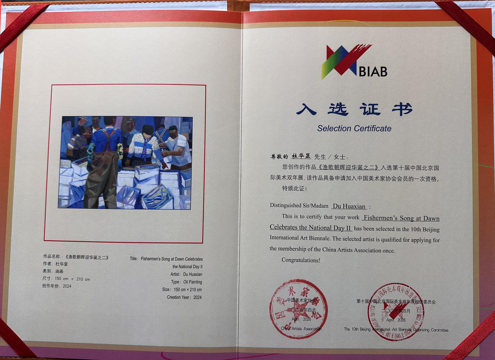

日常动态 Daily Updates
2026年
10月 北京国际双年展证书：

10月 芝加哥艺术博览会：
https://www.expochicago.com/
6 月 纽约FLOHAUS Gallery 画廊展览：
http://hs.china.com.cn/2026-04/03/content_43390277.html
凤凰网专访：逐浪时代的色彩交响：专访著名油画家杜华显
点击阅读凤凰网专访
凤凰网专访：双国家级展览入选！杜华显画家两幅《幸福生活》油画佳作绘就时代民生图景
点击阅读凤凰网专访
Beijing International Art Biennale 北京国际双年展


2000年
《农业知识》2000年12期版式山东省专业报刊新闻奖三等奖

1999年
油画作品在山东省两代人书画摄影大赛中获得三等奖。

《女人体》《油画风景》参加学院优秀学生汇报展。

1998年
油画作品《追寻》在庆祝改革开放二十周年美术作品展获三等奖

1997年
在美术系素描大赛二等奖
1996年
山东艺术学院 油画第一工作室
系统学习。